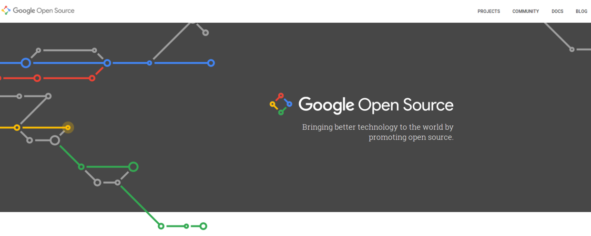
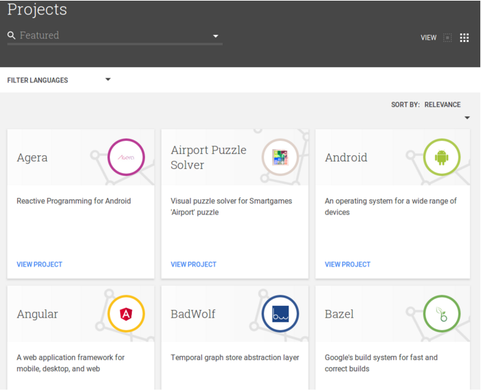
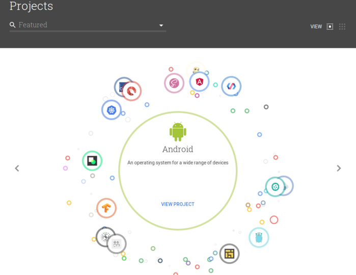
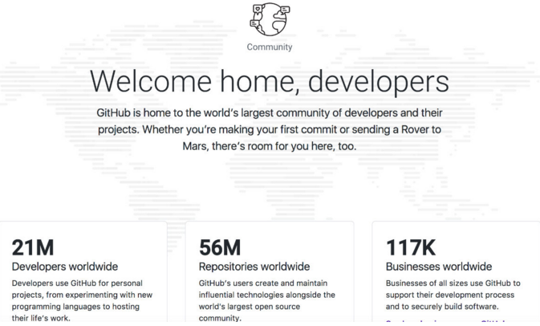
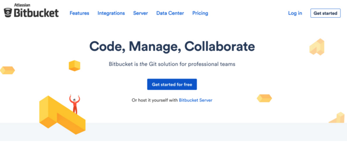
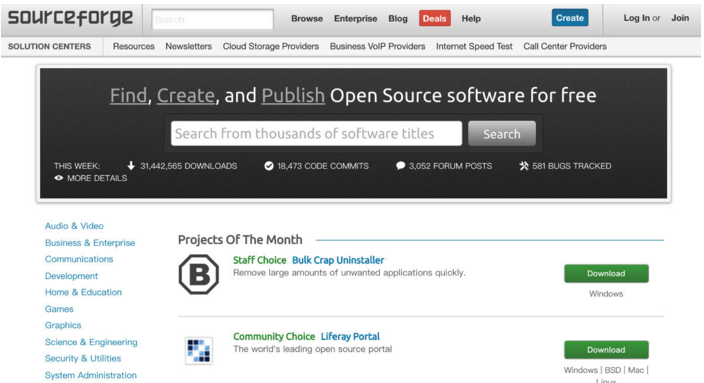
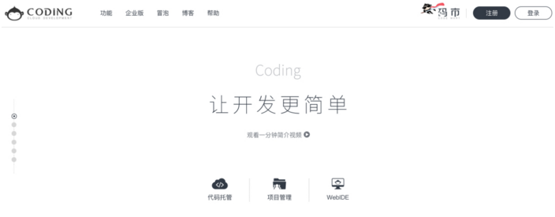
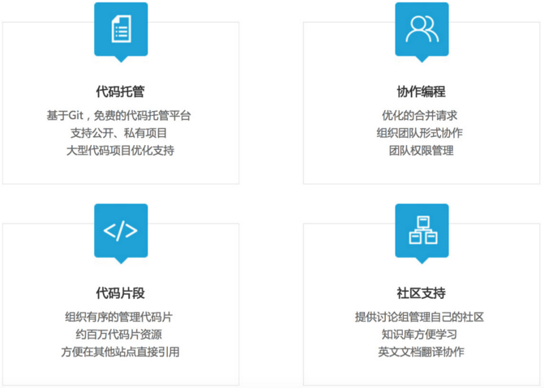
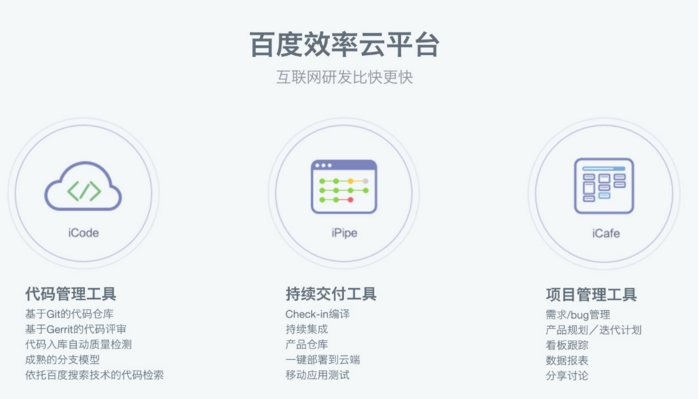

作者：谢恩铭
内容简介
-
前言
-
国外平台
-
国内平台
-
建议
1. 前言
2017 年 3 月 28 日，Google （以下也称「谷歌」）发布了新的开源网站 https://opensource.google.com/ 并且发表了一篇名为 A New Home for Google Open Source （直译是「谷歌开源的新家」）的文章。

谷歌开源
Google 一有大动作，总是能吸引全世界眼球。这不，这几天各界相关文章铺天盖地。
说起 Google 的新开源网站，上面汇集了 2000 多个开源项目，几千万行代码，其中不乏著名的 Android，Go，Angular，Chromium，Kubernetes，等等。
其实以前 Google 有一个开源网站，叫 Google Code，不过 2016 年已经停止维护了，但网站还是在的，以前的项目也还能找到。
个人感觉这个新网站有点像「重生」又变更强大的 Google Code。当然，它的功能不只是开源代码的仓库。
进入新开源网站后，可以看到四个菜单：PROJECTS（项目）, COMMUNITY（社区）, DOC（文档）, BLOG（博客）。
主要的菜单是 PROJECTS ，因为里面是所有项目。
可爱的 Google 还做了两个浏览项目的方式：
一种是传统的 列表方式：

列表方式
我个人很喜欢第二种 动态浏览的方式，图标都是浮动的，每个小图标都是一个项目。你点击一个小图标，它就会被置于中心，放大，再点击「 VIEW PROJECT 」即可进入项目：

动态浏览的方式
Google 发布新开源网站，正好给我了想法，来汇总一下国内外代码托管网站（虽然 Google 的这个新网站与一般的代码托管网站并不同）。
我觉得我们真的生在一个不错的时代，有如此多方便的工具可以提高我们的工作、生活效率。
从某种意义上来说我们比以前的人至少多活了好几十岁，因为我们可以很快地完成从前的人需要花几个月甚至几年才能做的事。
那么我们就一起来看看国内外有哪些不错的代码托管平台吧。
2. 国外平台
Github
由 Git （著名的 Git 版本控制软件） 和 Hub（ 「 中心 」 的意思） 两个词合成。
Github 自不用多说，开源项目的聚集地，程序员的另类简历。到目前为止 Github 汇集了全球 2100 万程序员，5600 万代码仓库，11 万 7 千个企业。
可以创建很多公开仓库，不过私有仓库是收费的。
Markdown 支援很好。
Github 的页面设计很不错，相比其他几个平台更有设计感，而且经常在更新设计。
Github Job 可以方便找工作。
Github 有一个很实用的东西：gist ，用来跟别人分享代码片段时很好用。

Github
Gitlab
由 Git （著名的 Git 版本控制软件） 和 Lab（ laboratory 的缩写，是「 实验室 」 的意思） 两个词合成。
比较适合企业使用，个人项目用 Gitlab 也很好。能够创建免费的私有仓库。
我们公司目前的代码托管就是用内部搭建的 Gitlab。目前 Gitlab + Docker + Jenkins 协同运作，配合起来风生水起。

Gitlab
顺便附上之前我写过关于 Git，Github和Gitlab的文章：
BitBucket
由 Bit （二进制位，「 比特 」） 和 Bucket（桶） 两个词合成。
同时支持 Git 和 Mercurial 这两个版本控制软件。
免费的私有仓库，支持5人以内的合作开发。

BitBucket
SourceForge
由 Source （源(码)） 和 Forge（锻造车间，熔炉） 两个词合成。
个人觉得页面设计有点欠缺，有种拥挤的感觉。

SourceForge
3. 国内平台
码云
国内最大的开源社区 OSChina 的代码托管平台。名字有点囧 ：码云 （不知道 马总 怎么看）。
提供团队协作开发。可创建 1000 个项目，不限私有或公有。
码云
码市
CODING （码市）是国内首个一站式云端软件服务平台。
云端软件开发协作平台，目前已累积 30 万开发者，50 万个项目。

码市
CSDN Code
作为国内最大的编程社区，CSDN 的代码托管平台自然不会差。
CSDN 的代码托管平台一大特色是和CSDN 的博客实现连接，在博客中可以方便地引用平台上的代码，在博客中写入的代码也可以自动保存到平台上。

CSDN Code
百度效率云
百度的代码托管平台。依托于百度这样的巨头，优势明显。
代码托管，版本管理，持续集成，交付，敏捷项目管理。
网址：http://xiaolvyun.baidu.com/

百度效率云
4. 建议
对于程序员来说，会使用代码托管平台以及版本控制软件，是非常必要的技能。尤其是像 Github 这样可以作为程序员简历的一部分的「极客社交平台」。多参与优秀开源项目的 Bug 修改、功能添加；自己也可以发布自己的代码仓库，并做好维护，让别人来参与。这是打开业界知名度的好方法。
使用代码托管平台可以锻炼我们使用版本控制软件（如 Git，Mercurial，等等）的能力。
对于企业来说，使用一个代码托管平台背后的软件非常重要。当今这个时代，如果一个IT企业内部没有代码控制，那简直不可想象。个人比较推荐 Gitlab。
做好个人的本地备份也很要紧。虽然目前在线代码托管平台很多，但作为程序员最好有危机意识。至少买一块移动硬盘吧，把自己写的重要的代码定期备份起来。
欢迎留言补充指正，因为肯定有我遗漏的优秀代码托管平台。
谢谢！
本文持续更新。